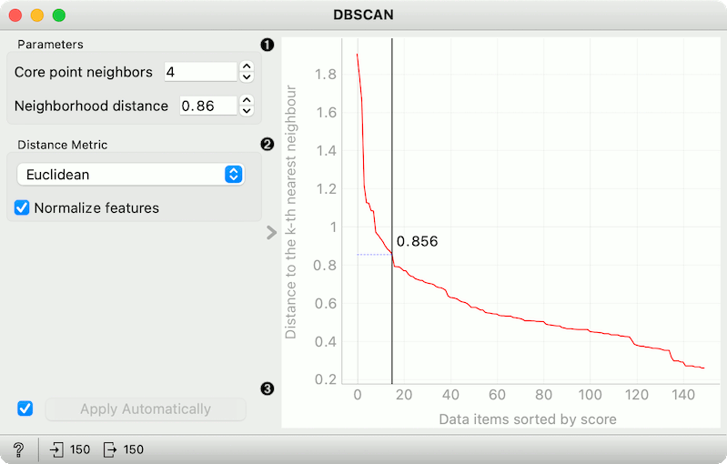
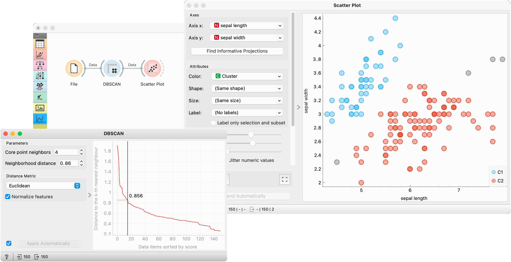

DBSCAN
Groups items using the DBSCAN clustering algorithm.
Inputs
- Data: input dataset
Outputs
- Data: dataset with cluster label as a meta attribute
The widget applies the DBSCAN clustering algorithm to the data and outputs a new dataset with cluster labels as a meta attribute. The widget also shows the sorted graph with distances to k-th nearest neighbors. With k values set to Core point neighbors as suggested in the methods article. This gives the user the idea of an ideal selection for Neighborhood distance setting. As suggested by the authors, this parameter should be set to the first value in the first “valley” in the graph.

- Parameters:
- Core point neighbors: The number of neighbors for a point to be considered as a core point.
- Neighborhood distance: The maximum distance between two samples for one to be considered as in the neighborhood of the other.
- Distance metric used in grouping the items (Euclidean, Manhattan, or Cosine). If Normalize features is selected, the data will be standardized column-wise (centered to mean and scaled to standard deviation of 1).
- If Apply Automatically is ticked, the widget will commit changes automatically. Alternatively, click Apply.
The graph shows the distance to the k-th nearest neighbor. k is set by the Core point neighbor option. With moving the black slider left and right you can select the right Neighborhood distance.
Example
In the following example, we connected the File widget with the Iris dataset to the DBSCAN widget. In the DBSCAN widget, we set Core points neighbors parameter to 5. And select the Neighborhood distance to the value in the first “valley” in the graph. We show clusters in the Scatter Plot widget.
